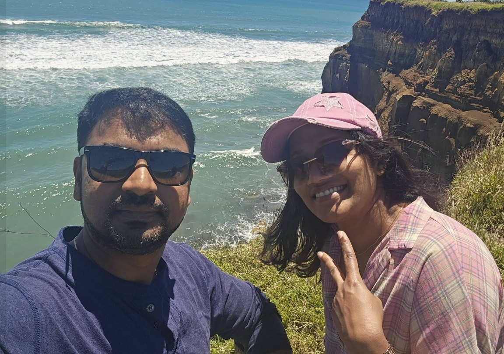
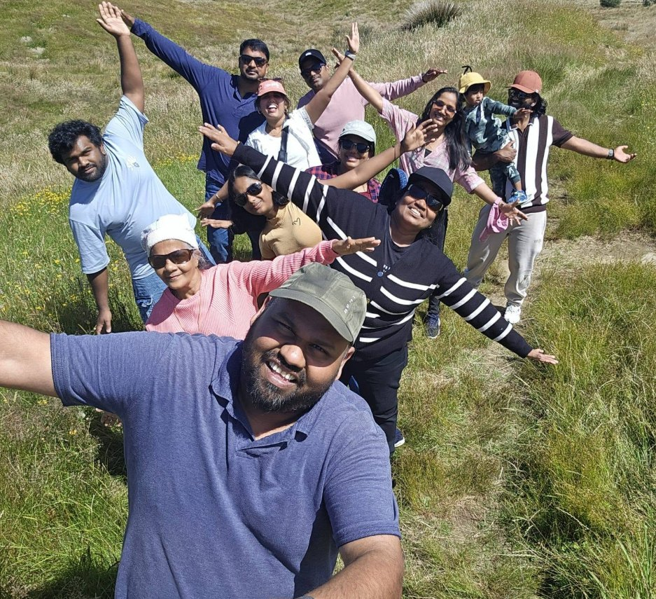
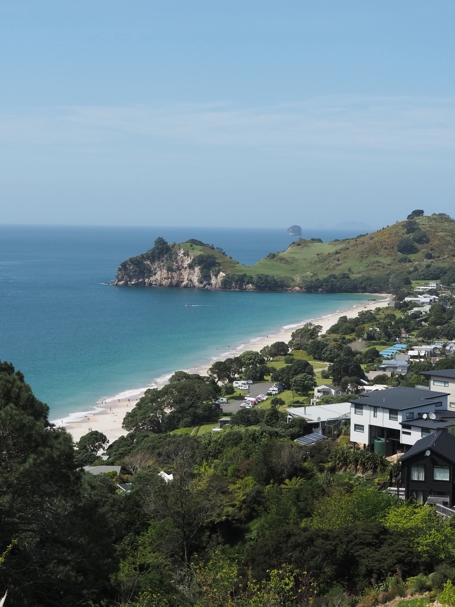

They were where you are now
Clinicians who moved to New Zealand and Australia with us: why they went, what was hard, and what an ordinary week looks like now.
Every story is told in their own words, and every photograph is theirs, published with their consent.


Two careers, one hospital in Wellington
Sandra, an ODP from the NHS, and Amal, from a leading hospital in the UAE: a year in different countries with a new baby, now together in one place.
▶ Includes their airport reunion video Read their story“Both my wife and I secured positions, giving us the chance to build our careers together and reunite our family.”

From Kerala to Palmerston North
Neethu, Anu and Rezon: friends from Kerala, Abu Dhabi and Qatar, now three families in one city.
Read their story“A year later, the children are thriving, we have a wonderful group of friends around us and Palmerston North genuinely feels like home.”

From South Africa to Auckland
Janita, Jonathan and Nova the dachshund, including the year it took Jonathan to find work.
Read their story“We feel safe, and things generally just work. No more load shedding!”

From Iran to Northland
Emad Kabiri, a keen hiker who had never heard of Whāngārei until we mentioned it.
Read their story“I’m really pleased Ethicare introduced me to somewhere I might never have considered on my own.”
“I never planned to leave the NHS”
Megan Barnes, Manchester to the Sunshine Coast, after one LinkedIn message.
Read her storyAbout half an hour later I was in the water. And I remember thinking: this is it.
In a few lines
Shared with permission, without names.
I remember one evening making dinner and looking out of the kitchen window. The children were outside on their bikes with the neighbour’s children. They’d been out there for ages, and I hadn’t once gone to check where they were. It suddenly hit me that I’d stopped worrying.
While I was worrying about registration, visas and everything that comes with moving to another country, my daughter only wanted to talk about one thing: snow. A few months after we arrived, we finally made a trip to the South Island. She picked up a handful, laughed for about five minutes, then complained that her hands were freezing.
I’d always dreamed of living by the sea; now it’s completely normal to walk along the beach after work. I still catch myself looking up at the blue sky some mornings — after so many grey days in London, you really notice it. It’s not that Auckland is quiet. It’s that life just feels a little less rushed.
Every one of these started with a question
Could I register? What would I earn? Where would we live? Start with whichever one is on your mind.
Moved with us and happy to share how it went? Email hello@ethicareresourcing.com. We only ever publish a story with the person’s consent, in their words.